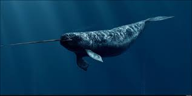
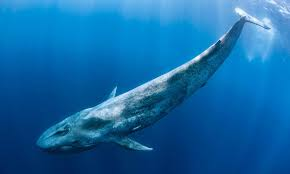
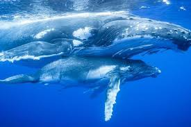
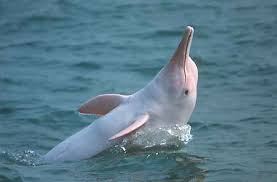
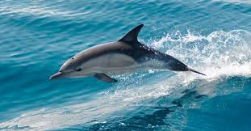

Habita en las aguas de la región ártica al norte de Canadá, los mares del lado ruso del océano Ártico y al norte del océano Atlántico. Con mayor frecuencia se ubican en el sector norte de la bahía de Hudson, en el estrecho de Hudson, en la bahía de Baffin, en la costa este de Groenlandia y desde la franja que va desde el noreste de Groenlandia sobre la costa de Rusia hasta los 170° de longitud este. Los territorios en esta franja incluyen Svalbard, Tierra de Francisco José y Severnaya Zemlya a 85° de latitud norte. La mayor parte de la población se concentra en los fiordos y ensenadas del norte de Canadá y Groenlandia occidental.
Las estimaciones sobre la población mundial varían de acuerdo a la publicación. Según Innes et al y la Comisión Para los Mamíferos Marinos del Atlántico Norte (NAMMCO), para 2002 la población global probablemente excedía los 80 000 individuos. La población más numerosa es la del Ártico canadiense, con un número superior a 70 000 ejemplares congregados durante el verano. Laidre et al en 2008 propusieron una cifra aproximada de 75 000 individuos. El Departamento de Pesca y Océanos de Canadá (DFO) en 2008 publicó una estimación de 86 000 individuos en las aguas del Ártico canadiense, en el territorio Nunavut, basando las cifras en las siguientes mediciones:
En el fiordo Inglefield Bredning y sitios adyacentes al noreste de Groenlandia, entre 2001 y 2002 se estimó una población de 2297 y 1478 respectivamente. En el sector euroasiático del Ártico solo se ha realizado una estimación en Scoresby Sound y el fiordo King Oscar al oriente de Groenlandia, con una cifra de 176 animales. En las aguas del noreste del Atlántico no existen estudios recientes.
|  |
 |
 |
|  |
 |